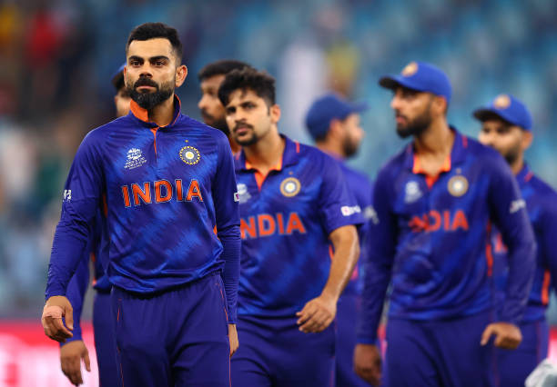
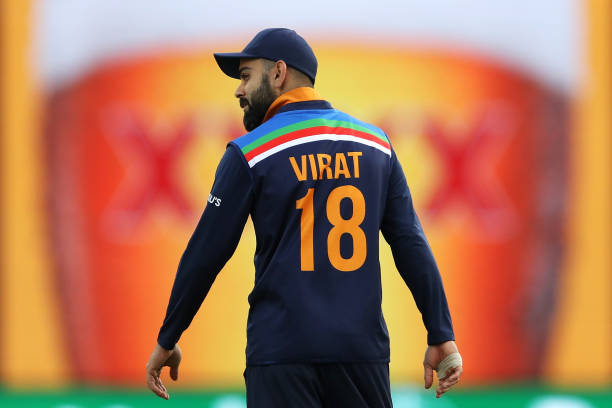
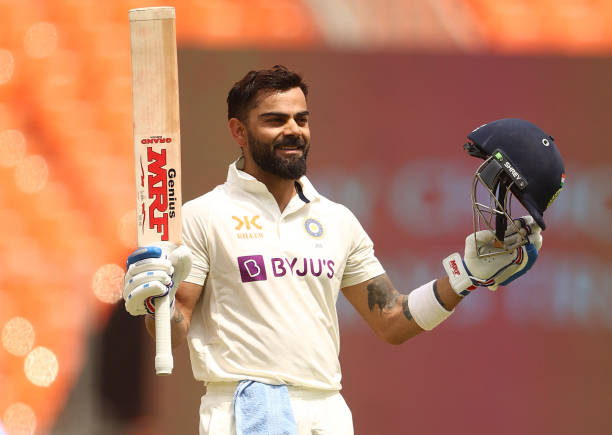
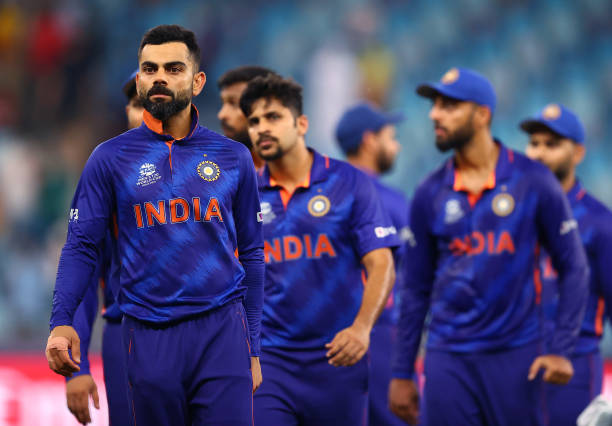
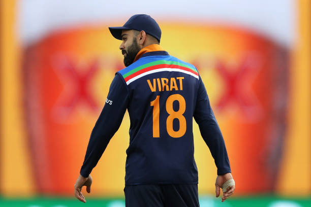
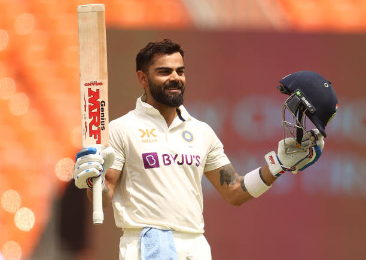

🏏 Virat Kohli
The Run Machine
Here's a time line of Virat Kohli's life:
- 2006 - After impressing at the youth level for Delhi, Virat is selected for the India Under-19 team for the first time and has a glorious tour of England, averaging over a hundred in the one-day series.
- 2008 - Virat captained India to victory in the Under-19 World Cup in Malaysia, finishing the tournament as one of the top three run-getters. His natural leadership skills caught the attention of all the right people.
- 2008(August) - Virat was called up to the Indian ODI squad for the first time, playing all 5 matches in an away series against Sri Lanka. He scored his first half-century, an innings of 54, in game 4 of the series.
- 2011 - Virat played every single match of India’s successful 2011 World Cup campaign, making his only century in the first game of the tournament against Bangladesh. Though he didn’t really light up the tournament with his bat, his quote about Sachin at the end of the tournament has gone down in cricketing folklore: “Sachin Tendulkar has carried the burden of the nation for 21 years. It is time we carried him on our shoulders.”
- 2011 - Ask any cricketer what their aspiration is, and they will universally say play Test cricket. Virat finally got the chance to make his Test debut in 2011 against the West Indies, and unfortunately for the charismatic youngster, it was a far-from-memorable occasion, making a grand total of 19 runs in the two innings he played.
- 2012 - Virat played what is arguably one of the best ODI innings ever by an Indian batsmen smashing 133 not out against Sri Lanka off just 86 balls to guide India to the final of CB Series in Australia. India were chasing 321 and got to the target in 37 overs as Hobart witnessed one of the greatest batting displays ever.
- 2014 - Kohli got his first taste of Test captaincy when he was once again asked to step in for an injured MS in Australia, and celebrated by scoring a century in both innings in Adelaide. In what was a memorable
- 2016 - He played what was easily the best innings of his burgeoning career as India beat Australia in Mohali to advance to the semi-finals of the ICC World T20. His 82 off 51 balls was a classy effort, etched with timing and precision as opposed to the lappa style of cricket one usually associates with 20 over cricket.
If you have time, you should read more about this incredible human being on his Wikipedia entry.
Tweets 🐦
🌊☀️ pic.twitter.com/VBVvlIIvLh
— Virat Kohli (@imVkohli) June 12, 2022
Images 🖼️


 




